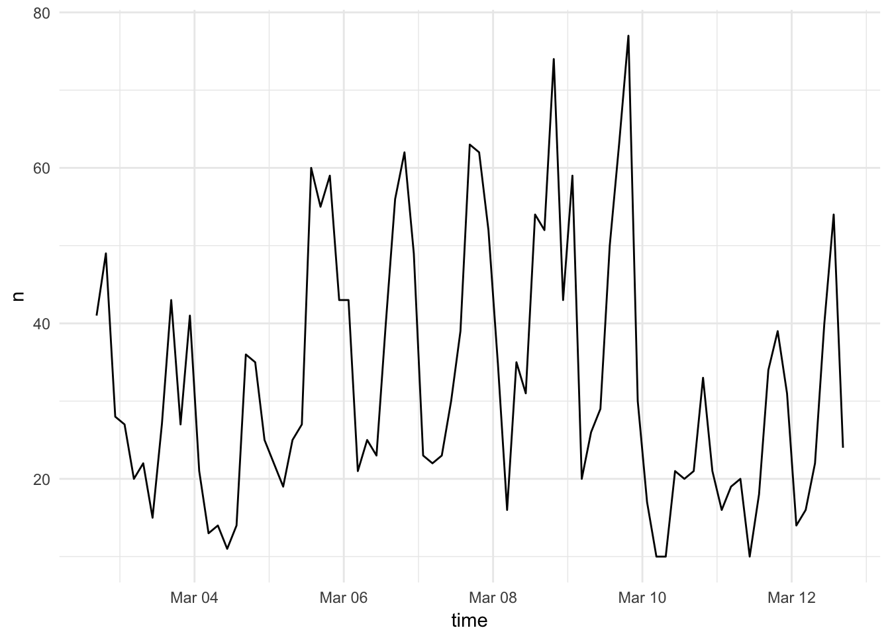
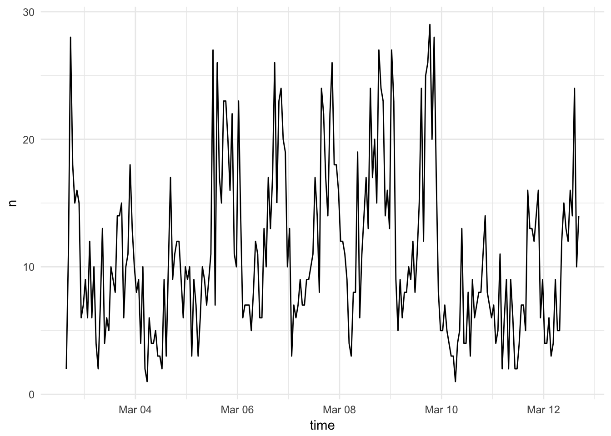
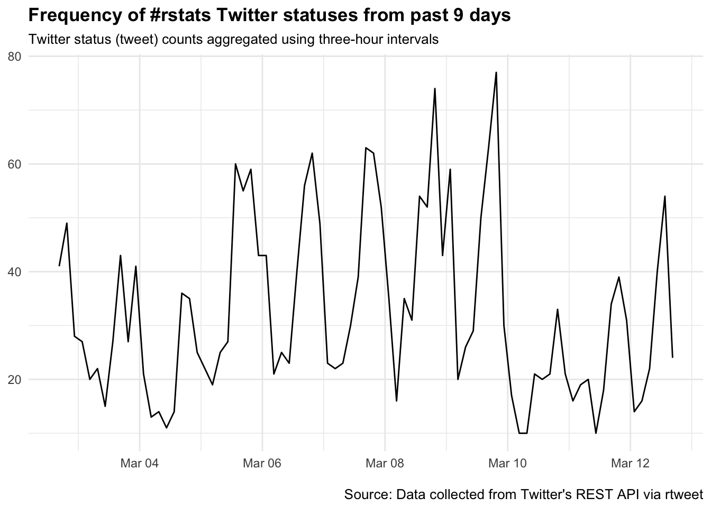

Practice getting data from the Twitter API
library(tidyverse)
library(broom)
set.seed(1234)
theme_set(theme_minimal())There are several packages for R for accessing and searching Twitter. Twitter actually has two separate APIs:
- The REST API - this allows you programmatic access to read and write Twitter data. For research purposes, this allows you to search the recent history of tweets and look up specific users.
- The Streaming API - this allows you to access the public data flowing through Twitter in real-time. It requires your R session to be running continuously, but allows you to capture a much larger sample of tweets while avoiding rate limits for the REST API.
Popular packages for the Twitter API in R include:
twitteRis the most popular package for R, but it only allows you to access the REST API. It is also deprecated (not actively updated), in lieu of a new up-and-coming package (identified below)streamRis more complicated, but allows you to query the Streaming API from R. It is ancient in computational terms (last updated in January 2014), but does what it needs to do.rtweetis a relatively recent addition to the R package universe that allows you to access both the REST and streaming APIs.
Using rtweet
Here, we are going to practice using the rtweet package to search Twitter.
install.packages("rtweet")library(rtweet)OAuth authentication
OAuth is an open standard for authorization, commonly used as a way for Internet users to authorize websites or applications to access their information on other websites but without giving them the passwords. This still requires an API key, but is a bit more complicated to setup.
Create a Twitter App
In July 2018, Twitter changed the process to create applications in response to data privacy concerns. This can potentially hamper your ability to use the Twitter API to collect and analyze data. The instructions below should still work, assuming Twitter has approved your request to create a developer account. Request a developer account here. This process is not instantaneous. It could take a handful of hours. Or longer. I requested my developer account in July and I am still waiting for approval. Your results may vary 🤷🏼
- To create a Twitter app, navigate to apps.twitter.com and create a new app by providing a
Name,Description, andWebsiteof your choosing (example screenshot provided below) - Important In the
Callback URLfield, make sure to enter the following:http://127.0.0.1:1410 - Check yes if you agree and then click “Create your Twitter application”

Create an application
Access token/secret authentication
- Click the tab labeled
Keys and Access Tokensto retrieve your keys

Created application
- In the
Keys and Access Tokenstab, locate and copy/paste valuesConsumer Key(aka “API Key”) andConsumer Secret(aka “API Secret”) into an R script

Get API key and secret
- In the
Keys and Access Tokenstab, scroll down toToken Actionsand clickCreate my access token

Generate access token
- That should generate two access keys:
Access TokenandAccess Token Secret

Access token and token secret
- Locate and copy/paste
Access TokenandAccess Token Secret(fake keys shown in image above) into an R script file - Once the keys are read into R, pass the objects to
create_token(), and store the output astwitter_token
# create token and save it as an environment variable
twitter_token <- create_token(
app = appname,
consumer_key = key,
consumer_secret = secret,
access_token = access_token,
access_secret = access_secret
)- The
create_token()function should automatically save your token as an environment variable for you. This is basically a global version of.Rprofile. Now you can access the Twitter API throughrtweetfrom any project on your computer without having to reauthenticate. To make sure it worked, compare the created token object to the object returned byget_token()
# check to see if the token is loaded
identical(twitter_token, get_token())Searching tweets
To find 3000 recent tweets using the “rstats” hashtag:
rt <- search_tweets(
q = "#rstats",
n = 3000,
include_rts = FALSE
)## Searching for tweets...## Finished collecting tweets!rt## # A tibble: 2,656 x 42
## status_id created_at user_id screen_name text source
## <chr> <dttm> <chr> <chr> <chr> <chr>
## 1 973234778… 2018-03-12 16:30:27 2957630… calves06 Today’s the… Twitt…
## 2 973234218… 2018-03-12 16:28:14 9354611… RLadiesLau… We are cont… Twitt…
## 3 973233874… 2018-03-12 16:26:52 8441528… rweekly_li… Steel-ing a… R Wee…
## 4 973233697… 2018-03-12 16:26:10 4686586… bass_analy… "A tidy mod… Twitt…
## 5 973232678… 2018-03-12 16:22:07 1989657… monkmanmh "TIL that I… Twitt…
## 6 973231360… 2018-03-12 16:16:52 16736320 kai_arzhei… @kuziemsky … Twitt…
## 7 973230437… 2018-03-12 16:13:12 89191817 BigDataIns… "Big | Data… Paper…
## 8 973229907… 2018-03-12 16:11:06 5232165… martinjhnh… "I've a #GI… Twitt…
## 9 973228130… 2018-03-12 16:04:02 3580439… maximaform… #Statistics… Buffer
## 10 973227858… 2018-03-12 16:02:57 1120991… fongchunch… Anyone know… Tweet…
## # ... with 2,646 more rows, and 36 more variables:
## # reply_to_status_id <chr>, reply_to_user_id <chr>,
## # reply_to_screen_name <chr>, is_quote <lgl>, is_retweet <lgl>,
## # favorite_count <int>, retweet_count <int>, hashtags <list>,
## # symbols <list>, urls_url <list>, urls_t.co <list>,
## # urls_expanded_url <list>, media_url <list>, media_t.co <list>,
## # media_expanded_url <list>, media_type <list>, ext_media_url <list>,
## # ext_media_t.co <list>, ext_media_expanded_url <list>,
## # ext_media_type <lgl>, mentions_user_id <list>,
## # mentions_screen_name <list>, lang <chr>, quoted_status_id <chr>,
## # quoted_text <chr>, retweet_status_id <chr>, retweet_text <chr>,
## # place_url <chr>, place_name <chr>, place_full_name <chr>,
## # place_type <chr>, country <chr>, country_code <chr>,
## # geo_coords <list>, coords_coords <list>, bbox_coords <list>q- the search queryn- maximum number of tweets to be returnedinclude_rts = FALSE- exclude retweets generated by Twitter’s built-in “retweet” function. We only want original tweets.
The resulting object is a tibble data frame with one row for each tweet. The data frame contains the full text of the tweet (text), the username of the poster (screen_name), as well as a wealth of metadata.
Note that the Twitter REST API limits all searches to the past 6-9 days. You will not retrieve any earlier results.
Searching users
Use get_timeline() or get_timelines() to retrieve tweets from one or more specified Twitter users. This only works for users with public profiles or those that have authorized your app.
countvoncount <- get_timeline(user = "countvoncount", n = 1000)
countvoncount## # A tibble: 1,200 x 42
## status_id created_at user_id screen_name text source
## * <chr> <dttm> <chr> <chr> <chr> <chr>
## 1 9731839178… 2018-03-12 13:08:21 5551297… CountVonCo… One thou… CountVo…
## 2 9728970194… 2018-03-11 18:08:19 5551297… CountVonCo… One thou… CountVo…
## 3 9725799215… 2018-03-10 21:08:17 5551297… CountVonCo… One thou… CountVo…
## 4 9723081230… 2018-03-10 03:08:15 5551297… CountVonCo… One thou… CountVo…
## 5 9721420240… 2018-03-09 16:08:14 5551297… CountVonCo… One thou… CountVo…
## 6 9718551253… 2018-03-08 21:08:12 5551297… CountVonCo… One thou… CountVo…
## 7 9717343260… 2018-03-08 13:08:11 5551297… CountVonCo… One thou… CountVo…
## 8 9714776275… 2018-03-07 20:08:10 5551297… CountVonCo… One thou… CountVo…
## 9 9713870278… 2018-03-07 14:08:09 5551297… CountVonCo… One thou… CountVo…
## 10 9711303288… 2018-03-06 21:08:07 5551297… CountVonCo… One thou… CountVo…
## # ... with 1,190 more rows, and 36 more variables:
## # reply_to_status_id <lgl>, reply_to_user_id <lgl>,
## # reply_to_screen_name <lgl>, is_quote <lgl>, is_retweet <lgl>,
## # favorite_count <int>, retweet_count <int>, hashtags <list>,
## # symbols <list>, urls_url <list>, urls_t.co <list>,
## # urls_expanded_url <list>, media_url <list>, media_t.co <list>,
## # media_expanded_url <list>, media_type <list>, ext_media_url <list>,
## # ext_media_t.co <list>, ext_media_expanded_url <list>,
## # ext_media_type <lgl>, mentions_user_id <list>,
## # mentions_screen_name <list>, lang <chr>, quoted_status_id <chr>,
## # quoted_text <chr>, retweet_status_id <chr>, retweet_text <chr>,
## # place_url <chr>, place_name <chr>, place_full_name <chr>,
## # place_type <chr>, country <chr>, country_code <chr>,
## # geo_coords <list>, coords_coords <list>, bbox_coords <list>With get_timelines(), you are not limited to only the most recent 6-9 days of tweets.
Visualizing tweets
Because the resulting objects are data frames, you can perform standard data transformation, summarization, and visualization on the underlying data.
rtweet includes the ts_plot() function which automates some common time series visualization methods. For example, we can quickly visualize the frequency of #rstats tweets:
ts_plot(rt, by = "3 hours")
The by argument allows us to aggregate over different lengths of time.
ts_plot(rt, by = "1 hours")
And because ts_plot() uses ggplot2, we can modify the graphs using familiar ggplot2 functions:
ts_plot(rt, by = "3 hours") +
theme(plot.title = element_text(face = "bold")) +
labs(
x = NULL, y = NULL,
title = "Frequency of #rstats Twitter statuses from past 9 days",
subtitle = "Twitter status (tweet) counts aggregated using three-hour intervals",
caption = "\nSource: Data collected from Twitter's REST API via rtweet"
)
Exercise: Practice using rtweet
- Create a new R project on your computer. You can use Git or not - it is just for practice in class today
- Setup your API key with a Twitter app
- Authenticate using the
rtweetpackage in R - Find the 1000 most recent tweets by Katy Perry, Kim Kardashian West, and Ariana Grande.
- Visualize their tweet frequency by week. Who posts most often? Who posts least often?
Click for the solution
popstars <- get_timelines(
user = c("katyperry", "KimKardashian", "ArianaGrande"),
n = 1000
)
popstars %>%
group_by(screen_name) %>%
ts_plot(by = "week")
Acknowledgments
- This page is derived in part from “UBC STAT 545A and 547M”, licensed under the CC BY-NC 3.0 Creative Commons License.
- OAuth token storage derived from “Obtaining and using access tokens”.
Session Info
devtools::session_info()## Session info -------------------------------------------------------------## setting value
## version R version 3.5.1 (2018-07-02)
## system x86_64, darwin15.6.0
## ui X11
## language (EN)
## collate en_US.UTF-8
## tz America/Chicago
## date 2018-11-19## Packages -----------------------------------------------------------------## package * version date source
## assertthat 0.2.0 2017-04-11 CRAN (R 3.5.0)
## backports 1.1.2 2017-12-13 CRAN (R 3.5.0)
## base * 3.5.1 2018-07-05 local
## bindr 0.1.1 2018-03-13 CRAN (R 3.5.0)
## bindrcpp 0.2.2 2018-03-29 CRAN (R 3.5.0)
## broom * 0.5.0 2018-07-17 CRAN (R 3.5.0)
## cellranger 1.1.0 2016-07-27 CRAN (R 3.5.0)
## cli 1.0.0 2017-11-05 CRAN (R 3.5.0)
## colorspace 1.3-2 2016-12-14 CRAN (R 3.5.0)
## compiler 3.5.1 2018-07-05 local
## crayon 1.3.4 2017-09-16 CRAN (R 3.5.0)
## datasets * 3.5.1 2018-07-05 local
## devtools 1.13.6 2018-06-27 CRAN (R 3.5.0)
## digest 0.6.18 2018-10-10 cran (@0.6.18)
## dplyr * 0.7.8 2018-11-10 cran (@0.7.8)
## emo 0.0.0.9000 2017-10-03 Github (hadley/emo@9f2e0f2)
## evaluate 0.11 2018-07-17 CRAN (R 3.5.0)
## forcats * 0.3.0 2018-02-19 CRAN (R 3.5.0)
## ggplot2 * 3.1.0 2018-10-25 cran (@3.1.0)
## glue 1.3.0 2018-07-17 CRAN (R 3.5.0)
## graphics * 3.5.1 2018-07-05 local
## grDevices * 3.5.1 2018-07-05 local
## grid 3.5.1 2018-07-05 local
## gtable 0.2.0 2016-02-26 CRAN (R 3.5.0)
## haven 1.1.2 2018-06-27 CRAN (R 3.5.0)
## hms 0.4.2 2018-03-10 CRAN (R 3.5.0)
## htmltools 0.3.6 2017-04-28 CRAN (R 3.5.0)
## httpuv 1.4.5 2018-07-19 CRAN (R 3.5.0)
## httr 1.3.1 2017-08-20 CRAN (R 3.5.0)
## jsonlite 1.5 2017-06-01 CRAN (R 3.5.0)
## knitr 1.20 2018-02-20 CRAN (R 3.5.0)
## later 0.7.3 2018-06-08 CRAN (R 3.5.0)
## lattice 0.20-35 2017-03-25 CRAN (R 3.5.1)
## lazyeval 0.2.1 2017-10-29 CRAN (R 3.5.0)
## lubridate 1.7.4 2018-04-11 CRAN (R 3.5.0)
## magrittr 1.5 2014-11-22 CRAN (R 3.5.0)
## memoise 1.1.0 2017-04-21 CRAN (R 3.5.0)
## methods * 3.5.1 2018-07-05 local
## mime 0.5 2016-07-07 CRAN (R 3.5.0)
## miniUI 0.1.1.1 2018-05-18 CRAN (R 3.5.0)
## modelr 0.1.2 2018-05-11 CRAN (R 3.5.0)
## munsell 0.5.0 2018-06-12 CRAN (R 3.5.0)
## nlme 3.1-137 2018-04-07 CRAN (R 3.5.1)
## pillar 1.3.0 2018-07-14 CRAN (R 3.5.0)
## pkgconfig 2.0.2 2018-08-16 CRAN (R 3.5.1)
## plyr 1.8.4 2016-06-08 CRAN (R 3.5.0)
## promises 1.0.1 2018-04-13 CRAN (R 3.5.0)
## purrr * 0.2.5 2018-05-29 CRAN (R 3.5.0)
## R6 2.3.0 2018-10-04 cran (@2.3.0)
## Rcpp 1.0.0 2018-11-07 cran (@1.0.0)
## readr * 1.1.1 2017-05-16 CRAN (R 3.5.0)
## readxl 1.1.0 2018-04-20 CRAN (R 3.5.0)
## rlang 0.3.0.1 2018-10-25 CRAN (R 3.5.0)
## rmarkdown 1.10 2018-06-11 CRAN (R 3.5.0)
## rprojroot 1.3-2 2018-01-03 CRAN (R 3.5.0)
## rstudioapi 0.7 2017-09-07 CRAN (R 3.5.0)
## rvest 0.3.2 2016-06-17 CRAN (R 3.5.0)
## scales 1.0.0 2018-08-09 CRAN (R 3.5.0)
## shiny 1.1.0 2018-05-17 CRAN (R 3.5.0)
## stats * 3.5.1 2018-07-05 local
## stringi 1.2.4 2018-07-20 CRAN (R 3.5.0)
## stringr * 1.3.1 2018-05-10 CRAN (R 3.5.0)
## tibble * 1.4.2 2018-01-22 CRAN (R 3.5.0)
## tidyr * 0.8.1 2018-05-18 CRAN (R 3.5.0)
## tidyselect 0.2.5 2018-10-11 cran (@0.2.5)
## tidyverse * 1.2.1 2017-11-14 CRAN (R 3.5.0)
## tools 3.5.1 2018-07-05 local
## utils * 3.5.1 2018-07-05 local
## withr 2.1.2 2018-03-15 CRAN (R 3.5.0)
## xml2 1.2.0 2018-01-24 CRAN (R 3.5.0)
## xtable 1.8-2 2016-02-05 CRAN (R 3.5.0)
## yaml 2.2.0 2018-07-25 CRAN (R 3.5.0)This work is licensed under the CC BY-NC 4.0 Creative Commons License.